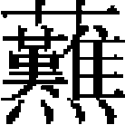
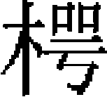

太祖諸子三
拖雷上旭烈兀 出伯 阿八哈 台古塔兒
拖雷，太祖第四子也。甫能言，太祖爲泰亦赤兀人所虜，額訶倫太后及家人皆謂不能免，拖雷獨曰：「我父乘栗色馬歸矣！」咸以爲妄語。翼日，太祖果至。乘鎖兒罕失剌所贈之栗色馬，衆始奇之。稍長，英武有幹略。太祖親征，常攜以自隨，呼爲那闊兒，譯言伴當也。
太祖七年，攻金德興府，不克。使拖雷與駙馬赤苦帥師再往，先登，毁其樓櫓，拔之。八年，從太祖攻雄、霸、莫、河間、滄、獻、深、祁、蠡、冀、恩、濮、開、滑、博、濟、泰安、濟南、濱、棣、益都、淄、濰、登、萊、沂諸州路，皆望風款服。
十四年，從伐貨勒自彌，别將一軍渡阿母河，略定呼拉商部，事具《西域傳》。
二十年，太祖分封諸子，拖雷分斡難河上源及合剌和林之地，太祖四大斡兒朵所在也。其後皇孫闊出等來求賞，太祖曰：「吾産業已盡與拖雷。彼家主也，可向拖雷索之。」國俗，少子守父遺産，故太祖獨以舊居之地與拖雷云。
二十二年，太祖崩於靈州，諸皇子奉梓宫北還，葬畢，各歸本部。拖雷監國以待立君。
又明年春，召集忽里勒塔，譯言大會議也。國俗，承大位者必經忽里勒塔之議定。太宗雖有太祖之前命，猶遵國俗，召諸王駙馬及諸大將會議。衆議多擁戴拖雷，太宗亦固辭，於是猶豫不決者四十餘日。已而斡赤斤與察合台決計遵太祖前命，乃扶太宗即位。拖雷進酒，諸王、駙馬、諸大將脱帽九頓首，稱「可汗萬歲」者三。太宗自御帳出，先拜日，而後受賀焉。
二年，太宗伐金。拖雷帥子蒙哥及諸王阿勒赤台、口温不花等，各以所部兵從行。渡漠，至官山，遂入河東，拔韓城、蒲城。金大將合達、布哈守鳳翔，進攻之，前軍戰不利。
明年二月，克鳳翔。五月，從太宗避署官山，集諸王、大將議伐金之策。先是，有降人李國昌言於拖雷：「金人遷汴二十年，恃黄河、潼關爲固。若出寶雞，道漢中，不一月可抵唐、鄧。金人失險，首尾不相顧，我取之如探囊底物矣。」拖雷然其計。及是以聞，太宗從之。遂定議三道進兵，期以明年春會汴。
先遣搠不罕如宋假道，至青野原，爲宋將張宣所殺。時拖雷已將右軍由鳳翔渡渭，過寶雞，入小潼關，欲沿漢水而下。聞宋殺使人，大怒，遂總三萬騎入大散關，破鳳州，徑趨華陽，出武休關，圍興元府，屠洋州。分一軍由沔西取大安軍。撤屋爲筏，渡嘉陵江。入八關堡，取葭萌，略地至西水縣，破城寨百四十而還。十一月，至興元、洋州間，與東軍合，進至饒風關，遂取金、房二州，破宋兵於武當山。趨均州。十二月戊辰，由峭石灘浮騎渡漢水而北，遣夔曲涅帥千騎馳白行在。
太宗方欲渡河，分兵南應拖雷。會夔曲涅至，即日使返報，約南北會師。拖雷既渡漢，諜知合達、布哈步騎十五萬據鄧州西之禹山以待。拖雷總七提控兵，凡三萬騎。金兵四倍之，惟步多騎少。拖雷悉留輜重，輕騎以進。丙子，日未出，次禹山，見金步騎傅山前後陣，因命我軍分布如雁翅，轉山麓出敵陣之後，以鋭騎突之。金人不得不戰，至以短兵相接，我軍少卻。别將在西者，望見布哈躬擐甲騎而督陣，亦自陣後襲之。金將蒲察定住力戰，爲所卻。遂退匿光化對岸棗林中，晝作食，夜騎以待。遣諜十人，敝衣羸馬，亡入金師，泣訴飢寒。金人信之，與之酒食，置陣後。十人乘間逃歸，盡得敵之虚實。庚辰，金大兵過林後，我軍突出攻之。敵棄輜重走，不復成列。我軍夜追之，比至鄧，敵已入城。圍之三日，不下，相持至歲除。
四年正月壬午朔，金人耀兵城外。拖雷不與戰，集諸將議，以頓兵堅城下，非計。明日，悉率大軍踰鄧而北，命札剌兒將三千騎殿。合達等慮我軍直襲汴京，亦棄鄧，躡我軍之後。甲午，我軍次五朵山。明日，曉行，大霧失道。金人以萬騎抄我軍，札剌兒戰，失利，多所折傷。拖雷怒其失律，以額勒只吉歹代之。我軍駐沙河北，命失吉忽都虎以五千騎誘敵。敵奪橋而進，我軍不與戰，南渡沙河。敵欲安營，我軍復渡河襲之，金人不得食宿。明日，雨雪，拖雷自以萬騎尾敵後，且戰且行。至黄榆店，距鈞州二十五里，雨雪不能進，兩軍對壘相持。拖雷命終夜鼓譟以擾之。
丙申，雪益甚。時太宗已由白坡濟河，先遣諸王口温不花等帥萬騎來會，伐大樹塞敵前路。會合達等得金主密諭，言北騎已過懷、孟，促入援。丁酉，雪不止，金將楊沃衍拔樹開道，完顔彝率所部爲前鋒。
至三峰山，彝先據山上，武仙、高英軍於山西南，樊澤、楊沃衍軍於東北。拖雷欲擊之。諸將請俟車駕至，破之未晚。拖雷曰：「機不可失，脱彼入城，未易圖也。况大敵當前，敢以遺君父乎？」乃佯卻以誘之。金將按忒木、張惠見我軍勢卻，即揮兵乘高而下。我軍回拒之。須臾，雪大作，白霧彌天，人不相覿。戰地多麻田，往往耕四五過，積雪盈尺，人馬所踐，泥淖没脛。金軍中有三日不食者，被甲胄僵立雪中，槍槊凍結如椎。拖雷合南北兩軍圍之數重，令軍士番休，析薪

火，割牛羊肉炙而啖之。久之，料敵憊，故開鈞州路縱之走，伏軍於前路夾擊之。金師大潰，聲如山崩。天忽開霽，日光皎然，金之精鋭盡爲我軍所殺。合達、彝、沃衍以數百騎走入鈞州。布哈走汴，至望京橋就獲。明日，車駕至，按行戰地，顧謂拖雷曰：「微汝不能破敵神速如此！」拖雷遜謝而已，聞者服其不伐。從拔鈞州，獲合達、彝，殺之。尋從拔許州，遂圍汴。
夏四月，扈駕北還，避署官山。五月，太宗不豫，暴瘖。六月，疾甚。師巫言：「金國山川神，以我殺戮過多，爲祟，非犧牲所能禳，惟子弟可以代之。」拖雷乃禱於天，請以身代，取釁祓之水而自飲焉。數日，太宗疾果瘳。拖雷從還漠北，行至阿剌合的思而卒，年四十。
憲宗即位，追上尊號，諡曰英武皇帝，廟號睿宗。至元二年，改諡景襄皇帝。至大二年，加諡仁聖景襄皇帝。子十一人：長憲宗，次忽都秃、世祖、旭烈兀、阿里不哥、不者克、末哥、歲哥都、雪别台，二子失名。
史臣曰：周公金縢之事，三代以後能繼之者，惟拖雷一人。太宗愈，而拖雷竟卒，或爲事之適然，然孝弟之至，可以感動鬼神無疑也。世俗淺薄者，乃疑其誣妄，過矣！
旭烈兀，拖雷第六子也，少世祖二歲。
太宗二年，旭烈兀伐宋，拔安豐。賜河中、陝西諸路爲分地。
憲宗即位，使旭烈兀開藩西域，一切承制專決，授爲葉爾堪。西域之制，汗曰阿塔畢，次汗位一等則爲葉爾堪。初，定宗中分西域之地：以額勒知吉歹管角兒只，領西域之西半境；阿兒渾管呼拉商，領西域之東半境。憲宗又分西域爲四部：曰呼拉商、馬三德蘭、義拉克、阿耳佩占，皆統於旭烈兀。
憲宗二年，以木剌夷凶悍無道，命旭烈兀率諸將討之。乃蠻人寶兒赤怯的不花有勇略，率萬二千人爲前鋒。
三年，怯的不花攻木剌夷吉兒都苦堡，地勢險峻，堅守不下。是年，憲宗又命大將撒里等征印度，亦聽命於旭烈兀。撒里等入克什米爾，涉印度斯單界，大掠而還。旭烈兀以怯的不花師老無功，乃決計親征。是時，西域統兵大將爲綽兒馬罕、貝住，分駐於克什米爾者爲岱兒巴圖［一］，三將皆受旭烈兀節制。未幾，岱兒巴圖卒，以撒里代之。太祖諸孫所部之兵，十僉其二，從旭烈兀討木剌夷。旭烈兀命貝住先至羅馬，修橋道，峙糧儲。憲宗諭旭烈兀，「木剌夷平後，即入伊拉克、羅耳、庫兒特諸部，以劫蒙古商旅也。報達如來修好，勿拒絶，否則移兵伐之。凡大兵所過之地，勿擾民，以廣招徠。軍事與杜庫司哈敦同議，聽其區畫。」憲宗意俟諸部平，盡畀旭烈兀爲封地，然未明言也。皇弟雪别台幼亦從行。是年，旭烈兀自和林返西域。
四年，率諸將出師。杜庫司哈敦以第二子台古塔兒從。察闊台孫也速蒙哥［二］、妃倭耳干納來犒師。免大兵所過之地今年租賦。
五年，駐兵撒馬兒干。其長官馬素特獻金織紋斡爾朵。未幾，皇弟雪别台卒。烏魯克射姆思哀丁先上謁，旭烈兀優禮之。至渴石，阿兒衮亦率所部來迎。旭烈兀分遣使者，諭各屬國，令出兵討木剌夷，有不從命者，先伐之。於是羅馬、法而斯、伊拉克、呼拉商、阿爾佩占、阿而法、失兒灣、角兒只諸酋，皆以兵至。造浮橋於阿母河，以濟師。中途，大雨雪，駐兵於渴石。阿兒衮亦以金織紋斡爾朵進，旭烈兀大悦。
先是，怯的不花使裨將率三千人過阿母河，至庫亦斯單，攻拔數堡。自將五千人，圍吉兒都苦堡，築壘掘濠，以裨將阿里守之，自引兵攻墨喝林堡，又襲破沙喝堡。又遣别將分兵，攻他勒姆與洛特巴兒兩堡。四年，吉兒都苦堡人夜襲布里營，殺傷甚衆，布里戰殁。怯的不花聞之，亟引還，攻拔徒唔及台而舍司兩堡，别將沙而班攻拔墨喝林堡。
明年，木剌夷酋阿拉哀丁爲馬三德蘭人哈三所剌殺，子兀乃克丁庫沙嗣。人咸謂兀乃克丁庫沙使哈三弑其父。
是年，旭烈兀遣烏魯克射姆思哀丁至賽而擔寒堡，諭其守將降，民不從。旭烈兀進至撒瓦及哈瓦甫之地，命怯的不花、庫喀伊而喀等以兵來會，攻庫亦斯單附近諸堡。旭烈兀由徒思進至噶爾珊，遣貝克帖木克等諭降庫而沙喝，復回軍入木剌夷。兀乃克丁庫沙遣其弟蔭恒沙來見，又使其異母弟僞爲己子入質，以甲士三百人衛送之。旭烈兀命兀乃克丁庫沙自來，終不至。旭烈兀遂分兵三道而進，期會師於鹿忒巴耳。不花帖木兒將右翼自禡拶答爾進，台古塔兒、怯的不花將左翼自西模囊進，布而嘎脱忽兒向阿剌模忒。旭烈兀自將中軍向塔勒耳，直至低簾，搗其巢穴，密殺兀乃克丁庫沙所遣之三百人於可疾寧。九月，進薄梅門迭思，兀乃克丁庫沙之新都也。諸將以冬寒，馬無芻秣，請旋師，俟來春再舉，不花帖木兒不謂然。乃定議炮攻，諭堡民五日出降，逾期則屠殺無噍類。守者登陴告曰：「兀乃克丁庫沙不在堡中，不得其命不敢降。」旭烈兀不信，命造衝車，刻日攻城。次日，兀乃克丁庫沙始遣使請降。已而其弟開城先遁，城民大嘩，復誓以死守。兀乃克丁庫沙又遣使白其事。旭烈兀以甘言撫之，下令亟攻城，城民亦發機弩拒之。是日，風雪，兵士皆凍瘃，不能仰攻。翼日，雪霽，大軍復乘勢攻之。至第四日，兀乃克丁庫沙率其子及將吏出降。旭烈兀厚撫兀乃克丁庫沙，命以手書諭低簾、庫母斯諸堡撤守備來降，惟阿剌模忒及蘭巴撒耳不下。旭烈兀自將攻阿剌模忒，裨將貝而該先登，仍爲矢石所卻。乃使兀乃克丁庫沙以書諭之。城民夜遁，大軍入空城，焚其廬舍而去。又至蘭巴撒耳，命塔亦兒不台圍之，自率諸將返哈馬丹。木剌夷平。旭烈兀以木剌夷諸堡險峻，不易下，乃許兀乃克丁庫沙不死，使諭降諸堡，故大小五十餘堡不煩兵力而定。
明年，旭烈兀議進攻報達，與諸將簡料軍實，同時大舉。初，旭烈兀出師，奉憲宗命盡殺木剌夷人。迨兀乃克丁庫沙入覲，旭烈兀下令：無少長男女，咸殺之。是年，報達境内大水，民多餓莩。
又明年，旭烈兀至秋納維思之地。未幾，仍返哈馬丹，遣使諭哈里發。事具《報達傳》。哈里發問退敵之策於諸將，其低瓦答兒謨牙代丁勸以納賄行成，凡祈禱之文及鑄錢皆用旭烈兀名。哈里發欲從之，其小低瓦答兒哀倍克不從，力請用兵。哈里發遂改計，謂諸將曰：「我與蒙古大汗及旭烈兀素通好，不至相仇，恐其部下所爲虚聲哃喝耳。」謨牙代丁不敢復言。哈里發以書幣至，歷述攻報達者咸獲天譴。旭烈兀益怒，然亦躊躕不決，恐報達不易攻，先使裨將率千人探其道路。至得而騰克之地，其守將曰忽珊姆哀丁，以城降，旭烈兀許以附近之地封之。已而哈里發大將素黎曼沙兵至，忽珊姆哀丁又中悔，使告哀而陛耳軍官：「嚮者降於蒙古，欲覘其軍之虚實耳。如哈里發厚待我，我能集庫而特人十萬，據險邀之。」其軍官告於哈里發，不以爲意。旭烈兀聞忽珊姆哀丁反，復遣怯的不花乘其無備襲殺之［三］，墮其城。與諸將決策深入，留哈塔克守哈馬丹；命貝住等爲右翼，自報達西北進；怯的不花等爲左翼，自報達東南進。自將中軍進次耶塞脱阿卜秃，再遣使招諭哈里發，仍不從。遂踰闊薛斯單之隘，大掠乞里茫沙杭，建黄斡兒朵於倭古兒之地，召諸將議軍事。貝住等乃自體格力斯河上游東渡，以土耳基軍校二人爲嚮導。又使諭哈里發，如不能自來，當使低瓦答兒素黎曼沙先至。哈里發亦不答。旭烈兀進至呼耳汪。時怯的不花已入羅耳斯單。貝住等還渡體格力斯河，從塔克里丹東南入。哈里發使哀倍克、費度曷丁，喀拉辛酷耳等守體格力斯河東之牙庫拔城，聞貝住等已渡河，亦引兵西渡，遇前鋒將蘇衮察克於盎瓦拔耳，再戰，全軍盡覆，費度曷丁、喀拉辛酷耳死之，哀倍克單騎遁歸報達，亟繕城守。貝住等沿體格力斯河直抵城西。河東諸將怯的不花營於開克拔提門，布而嘎等營於速克莎勒壇門。旭烈兀自營於阿鄭門。城圍遂合。哀倍克欲乘小舸突圍走，爲巡邏所邀截，仍引還。哈里發再遣長子與謨牙代丁至軍中，旭烈兀拒不見。遣使召素黎曼沙及哀倍克至，縱之歸，使告城中：「蒙古將遷城民於西利亞，願出者聽。」及城民出，分於各營，次日悉殺之，並殺素黎曼沙、哀倍克。越日，哈里發率其三子及法官、教士、貴族等出降。旭烈兀置哈里發父子於怯的不花營。大宴宫中，命縶哈里發至，告以「君爲室主人，我爲客，何以贈我？」哈里發獻錦衣二千襲，黄金一萬的那，其他珍寶稱是。旭烈兀曰：「是但可犒吾從者。」促令發窖藏，黄金珠玉充牣其中，阿拔斯五百餘年之蓄積悉爲旭烈兀所有焉。事定，以氈裹哈里發，置通衢，驅馬踐斃之。縱兵殺掠，死者八十餘萬。自是兵威所及，望風披靡。
八年，進攻西里亞。明年，入他古木斯都城，聞憲宗大漸，兵始返，事具《西里亞傳》。
初，朮赤後從旭烈兀征報達者，曰土拉爾，曰布而嘎，曰庫里。土拉爾以事被讒，旭烈兀嚴刑鞫之，誣服，命蘇衮察克執送於伯勒克汗。伯勒克以讞已實，使返而聽命，旭烈兀殺之。已而布而嘎、庫里亦相繼卒。伯勒克疑毒死，大怒。又以旭烈兀師行所至，殘殺素尼、十葉教士，無人理。中統二年，盡暴旭烈兀之惡，興師問罪，聲言爲冤死者復仇。分二軍：自將一軍入呼拉商，又南取哥疾寧；其一軍命土拉爾從兄弟諾垓將之，由得耳盆脱進至設里汪，敗旭烈兀前鋒將失剌木於沙馬起。已而大將阿拔台繼至，諾垓敗。旭烈兀自將出得而盆脱，與阿拔台兵合，諾垓遁走，即諾垓幕中置酒三日，以慶戰功。
明年春，諾垓搜集散亡，軍復振。旭烈兀拒戰，失利，退渡帖列克河，冰泮，士卒多溺死。埃及王比拔而斯以西里亞事夙怨旭烈兀，聞旭烈兀兵敗，遂通好於伯勒克，與之連合。
至元元年，世祖遣使者册封旭烈兀爲伊而汗，自阿母河至西里亞，益兵三萬戍之。
明年，旭烈兀病卒，遺命以長子阿八哈爲嗣。旭烈兀封地南界印度洋，西南界阿剌伯河，東北界察合台、朮赤分地，與察合台、朮赤後王並稱三大藩。子十三人，知名者曰阿八哈，曰客兒來，曰台古塔兒牙世摩特，曰蒙哥帖木兒，曰台克實，曰空古斡兒，曰出木哈兒。
其子孫多留西域，惟諸孫出伯居中國。海都叛，出伯率所部扞禦西陲。至元二十年，封西寧王，賜銀印龜紐。二十五年，海都犯邊，出伯總駙馬昌吉、諸王也只烈等禦之，賜金銀幣帛。二十七年，又擊敗叛王昌吉。元貞初，立都元帥於北庭及曲先塔林，並受出伯節制。在西邊十餘年，爲朝廷倚重。
大德初，特賜征行馬粟。四年，賜鈔萬五千四百錠。五年，又賜六萬錠，别賜市馬直三十八萬四千錠，寵眷莫與爲比。及海都死，察八兒嗣，朝廷未審其向背，益出伯軍三千人，人馬二匹，官予其直，又籍甘州善射者二千人隸之，使嚴備西邊，以觀敵變。明年，察八兒降。
八年十二月，以功晉封威武西寧王，换金印駝紐，鎮哈密。十一年，晉封豳王。
出伯營軍之地，西接兀丹，有八答山，産玉，常謫罪人採之，道遠，進奉勞費。至元中，朝廷賜出伯錢幣，載以官驢，至則並驢賜之。桑哥議，請以驢載玉而回。至大初，出伯又進玉六百斤，賜金銀錠有差。
延祐七年，卒。子南忽里嗣，改封肅王。卒，弟恩特帖木兒嗣，降於明，封忠順王。
阿八哈，旭烈兀長子，生於太宗七年。
從父西征，躬擐甲胄，甚有戰功。旭烈兀開藩西域，使領馬三德蘭、義拉克、呼拉商三部。
旭烈兀卒，阿八哈來奔喪。管旭烈兀斡爾朵之大臣曰伊而喀，以遺命告阿八哈。既葬，伊而喀與諸大將曰蘇衮察克、曰蘇納台、曰阿拔台、曰台馬庫、曰辛圖爾、曰阿兒衮阿喀會議，遵遺命奉阿八哈嗣位。阿八哈讓於弟台古塔兒，衆不可。復欲俟世祖册命，衆以汗位不可久虚，再三勸進，乃即位於察罕淖爾。國俗，新君即位，羣臣從新君朝日，皆解帶挂於項，向日九拜；新君入帳殿，羣臣拜賀如初禮。
阿八哈自以未奉天子命，不敢遽踐汗位，設小坐於下以受朝。仍以射姆沙丁謨罕默德志費尼行尚書省事，阿兒衮阿喀司財賦，以弟台古塔兒轄得而盆脱及阿拉他克，弟台克實轄馬三德蘭、呼拉商，以伊而喀之子圖古司、蘇衮察克之弟杜丹轄羅馬，以杜而台轄的牙佩壳耳與美索卜塔米牙，以希拉們轄角兒只，以蘇衮察克轄報達與法而斯，阿拉哀丁阿塔瑪里克志費尼副之。定都於台白利司，夏駐阿拉他克昔耶庫，冬駐阿而俺，或報達，或楚喀圖。
至元三年夏，諾垓侵得而盆脱，台古塔兒與戰於阿克索河，諾垓傷目而退。阿八哈聞伯勒克汗自率大軍南來，乃退渡庫爾河，撤橋梁自守。兩軍隔河相持十五日，伯勒克欲改道自角兒只進兵，而病卒，軍亦罷。阿八哈遂築邊牆於庫耳河北，自達蘭淖爾至得世庫耳提俺，分兵守之。是年冬，埃及王比拔而斯知與朮赤後王稱難，不能西顧，以兵奪西里亞境内濱海數地，復侵小阿昧尼亞。小阿昧尼亞酋海屯第一乞援於阿八哈，兵未至，其子立盎已戰敗被禽。海屯第一與埃及議和，贖其子歸。是時阿八哈以東方有警，聽其行成。
七年，阿八哈與察合台後王博拉克戰於徒思，大敗之，事具《博拉克傳》。阿八哈留台克實守呼拉商，自引軍西行，至低

，遇木剌夷人行刺。羅耳酋約索甫下馬亟救之，獲免。是冬，世祖使命至，錫以冠服，册封爲汗，阿八哈乃重行即位禮焉。博拉克卒，其子伯克帖木兒、篤哇、布里亞、忽拉洼夷與阿魯忽之二子楚班、基顔合兵，攻海都，躪阿母河北，數與海都戰，而數敗。志費尼謂阿八哈曰：「彼之争，我之利也。然必有一勝，勝者併其衆，禍必及我。宜先掠其地，勿令生聚。」乃使捏克拜巴都爾、察而杜阿克貝將一軍渡阿母河；約索甫、喀而噶帶、楚而喀達夷、伊拉布哈將一軍，自呼拉商循阿母河之西，以侵烏爾鞬赤、機窪之地。捏克拜一軍入布哈爾，虜民五萬以歸。楚班率衆來追，奪還所俘之半。是時，埃及攻西里亞，數年兵不解，來乞援。八年，阿八哈命大將薩馬嘎爾率萬人援西里亞。冬，埃及人自丹馬斯克奄至，我軍敗退。埃及陷哈俺城而去。次年，又爲阿八哈所取。先是，比拔而斯欲與阿八哈行成，遣二使見薩馬嘎爾於昔挖斯城，因入謁阿八哈。時朮赤後王忙哥帖木兒屢約埃及夾攻阿八哈，使人其事。阿八哈聞之，大怒，即遣二使歸，遂渝平。
至元九年，阿八哈遣使至丹馬斯克，要比拔而斯自來議和，比拔而斯亦要阿八哈自往以答之。冬，遣將攻陛而哀城，比拔而斯來援，以駝馬負舟，舟可分合。既至哀甫拉特河，步卒乘舟，騎泅水，敗守河兵，攻城之將引還。
十一年，比拔而斯令阿剌伯之貝杜音人來侵，至諳拔爾。
十二年，又入小阿昧尼亞，分兵赴陛而哀，以拒援兵。冬，其將阿拔台攻陛而哀，以天寒糧運不繼而退。
十四年，比拔而斯自將攻羅馬，阿八哈遣圖古斯、倭而洛克圖、杜丹三將統十一隊以援之。羅馬之配而斡迺亦以兵從。配而斡迺，譯言宰相也。遇於阿白拉斯丁城，比拔而斯先登陷陣，圖古司、倭而洛克圖皆戰没，兵士死者六千七百餘人。配而斡迺潛通埃及，遣使賀捷。比拔而斯不敢久留，即班師。阿八哈聞兵敗，自將大軍繼至。比抵羅馬，則埃及人已先一月去矣。經阿白拉斯城，見尸骸山積，大哭。詈配而斡迺不多出兵助之，縱兵大掠。留空庫斡台統羅馬兵而返。道過貝布而堡，堡長出謁，請畢一言，許之。乃曰：「汗所仇者，埃及。今多俘羅馬民，何也？」阿八哈悟，責諸將不早言，盡返所俘。既而聞配而斡迺潛通埃及，乃責以三罪：一，戰敗而逃；一，敵兵至，不亟報；一，敗後不來請罪。十五年，戮之於阿拉他克。
十八年，阿八哈命弟蒙哥帖木兒統軍，角兒只、小阿昧尼亞人皆從，與埃及王開拉温戰於哈馬希姆斯。埃及遣人僞降，臨陣刺蒙哥帖木兒墜馬，軍亂，敵乘之，遂敗。時右翼已敗，敵兵追至希姆斯城下。待後軍不至，偵之，則中、左兩軍俱潰，亟退。埃及人逐於後，渡哀甫拉特河，多溺死，有逃入沙漠者亦暍死。阿八哈自爲後援，未及渡河，而前軍敗，亦退。
十九年，歸至哈馬丹，憤恚而卒，年四十八。
二子：長阿魯渾，次蓋喀圖。
阿八哈妃八人，一爲東羅馬王密哈哀兒巴里洛克之女。初，旭烈兀與東羅馬通好，結爲婚姻。羅馬俗，一夫惟一婦。蒙古妃嬪多，東羅馬王難之，重違其請，乃以私生女瑪里亞字之。送至中途，旭烈兀已卒，阿八哈遂娶之，以是厚撫天主教人，與教王及法蘭西諸國通使命。
其臣曰納昔兒哀丁，通天文、算術，著有測日儀器、曆算等書。講輿地學者曰只馬拉丁牙庫特，講樂律者曰阿白圖而謨愛明。人才輩出，一時稱盛焉。
阿八哈卒，弟台古塔兒牙世摩特嗣。
台古塔兒，阿八哈母弟也。
蒙古家法：君卒，擇其子及弟之年長者立之。阿八哈欲傳位於子阿魯渾，議未定而卒。諸弟以台古塔兒爲最長，其弟曰阿載、曰康廓而拉台、曰忽喇朮，其兄子曰楚式喀潑、曰景朮，與諸將蘇衮察克、辛杜而等皆擁戴之。附阿魯渾者，惟布哈與烏洛克等數人，勸阿魯渾勿與争。至元十九年，諸王、大將定議，立台古塔兒。
夏六月，台古塔兒即位，以素奉天方教，改名牙世摩特，不稱汗，而稱蘇而灘。下令國人皆奉教。以蘇衮察克爲大將，以射姆思丁志費尼爲相，司錢穀。其弟阿累屋丁志費尼，先坐事下獄，釋之，仍使鎮報達。以與埃及同教，遣使往議和。
阿魯渾雖讓位，然心不能平，又不欲入天方教。諸王、大將亦多以天方教爲非。阿魯渾奏於世祖，言台古塔兒違祖訓，從異教，世祖寢其事不問。阿魯渾分地爲柯拉森，歲賦少，軍儲不贍。請於台古塔兒，以法而斯、義拉克、阿朮迷三部爲屬地，台古塔兒不與。是年，阿魯渾在報達駐冬。台古塔兒以康廊而拉台鎮羅馬，恐與阿魯渾連合，遣兵駐的牙佩壳耳，扼其中路。康廓而拉台果與諸將約，欲俟台古塔兒西巡，襲殺之，而立阿魯渾。事覺，台古塔兒斷其脊骨殺之，同謀諸將與羅馬酋結牙特丁皆死。以重兵圍報達，捕阿魯渾。及兵至，阿魯渾已返柯拉森。時二十年正月也。
台古塔兒徵兵八萬伐阿魯渾，以大雪，緩師期。四月，兵至塔馬干，阿魯渾自將禦之，戰於開而布逐而克之地。阿魯渾兵敗，遣其子合贊與察合台孫尼古他而之子倭馬倭古而來議和。台古塔兒命阿魯渾自來，則受其降，前事釋不問。阿魯渾不敢往，台古塔兒再遣使諭之。六月，阿魯渾始至，命歸柯拉森，以部將阿里那克監之。台古塔兒旋師，密諭阿里那克，阿魯渾歸即殺之。
初，阿魯渾部將布哈將兵，兼管阿魯渾内政。台古塔兒即位，命喀阿布哈代之，故布哈怨台古塔兒，潛告諸將：「台古塔兒必欲殺阿魯渾及吾輩。」於是忽喇朮、楚式喀潑等皆信其言。七月，請阿里那克夜宴，阿里那克謂：「我監守阿魯渾者，不敢離。」楚式喀潑請代之，乃赴宴。既醉，布哈挾阿魯渾出，殺阿里那克於坐上［四］，並將其兵。楚式喀潑之弟控庫世亦引所部來會，諸將皆俯首聽命。
台古塔兒失衆，走其母杜庫司可敦營中。初，尼古他而將兵從旭烈兀征報達，遂留事阿八哈。及薄拉克來伐，貽書約其合應。尼古他而得書，未舉兵。阿八哈召之，尼古他而疑事泄，乃率所部奔得而盆脱，爲希拉們所敗，執送於阿八哈，囚之。其舊部潰散，在庫密失之地爲盜，稱其衆曰喀敖唔。至是，阿魯渾招之，使捕台古塔兒。康廓而拉台部將亦欲爲舊主復仇，率所部應之。台古塔兒與杜庫司可敦赴得而盆脱，欲入奇卜察克察。適喀阿布哈、辛杜而二將至，見台古塔兒勢去，反以兵守之。喀敖唔羣盜至，大掠，執台古塔兒，送於阿魯渾。阿魯渾以杜庫司可敦哀祈，欲宥之。康廓而拉台子請復仇，乃斷其脊骨以死。
是年，台古塔兒使者至埃及，埃及王開拉温聞國有内亂，下使者於獄，殺之。
史臣曰：旭烈兀闢地萬里之外，其功名與拔都相伯仲。兄弟鬩牆，自招外侮，使西略之雄圖限於埃及，惜哉！
【校勘記】
［一］「克什米爾」，原作「克什米耳」，據上文及《憲宗本紀》改。
［二］「察闊台孫也速蒙哥」，本書卷六《憲宗》有「察合台子也速蒙哥」。
［三］「復」，原作「覆」，據文意改。
［四］「阿里那克」，原作「那里那克」，據上文改。
本章完!